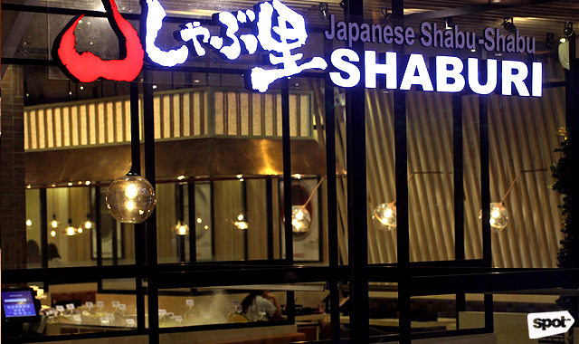

Taguig is a city that has made major contributions to the history of the Philippines. These contributions may be observed in its well-preserved historical sites, which convey the stories of the city's major roles in history. Here are some of its most notable sights, which everyone should take the time to see:
Its Historical / Cultural Heritage
- Dambanang Kawayan
- Archdiocesan Shrine of St. Anne
- Simboryo
- Parola
- The VFP Museum
- Libingan ng mga Bayani
- Bantayog ng mga Bayani ng Tipas
- The American Cemetery and Memorial
The Venice Piazza or the Venice Grand Canal Mall is one of the most well-known sites in Taguig City, located next to the Bonifacio Global City. This iconic location is modeled after the Grand Canal in Venice, Italy, with exterior designs and layouts that are remarkably similar to the genuine.
|
|  |
Source: CarloFindsFood's YouTube Channel
Location
4/F Uptown Mall, Uptown Bonifacio
Official FB page
Socials
- @TRAVELPHOfficial
 TRAVELPH Official
TRAVELPH Official
 TRAVEL PH Official Page
TRAVEL PH Official Page
All Rights Reserved 2021